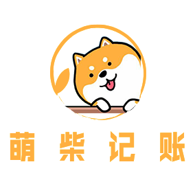
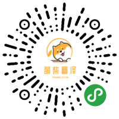

李晓楠
女 | 22岁 | 前端开发工程师
电话：15893264573 | 微信：L2439027428 | 邮箱：xiaonanli@163.com
教育经历
2016年~2020年 三峡大学（本科） 计算机与信息学院 数字媒体技术
-
GPA：3.59 / 4.0（专业前5%）
-
相关课程：数据结构、操作系统、计算机网络、数据库应用、计算机二维动画设计、Flash游戏编程等
-
连续三年获得二等奖学金和国家励志奖学金
-
第九届 / 第十届蓝桥杯大赛省级三等奖和省级二等奖
-
第12届中国大学生计算机设计大赛国家级三等奖和省级二等奖
-
2019年美国大学生数学建模竞赛国家级三等奖
-
程序员 / 程序设计师资格证书 / CET-4 / CET-6
-
在校期间曾担任三峡大学青年传媒集团干事和创意DIY社团部长
实习经历
-
中软国际有限公司 java网站开发实习生 2019年7月~2019年9月
在中软国际有限公司实习的这两个月，主要负责网站的后端开发，数据库的创建和增删改查，处理ajax请求等。使用的是 java 语言和 mvc+mybatis 框架结构。在此次的实习过程中，自己对网站的前后端整个开发流程有了更深刻的了解和掌握。
项目经历
-
萌柴记账(Vue本地版)
源码私有 项目预览
一款基于 Vue / TypeScript 的移动端单页面应用。

该项目使用了 Vue全家桶 技术，是我自学 Vue 时的项目实践，
使用 Vue CLI 进行项目环境的搭建，使用 Vuex 进行数据管理。
让我对 Vue 有了更深刻的理解和掌握。 -
萌柴记账(React本地版)
源码私有 项目预览
一款基于 React / TypeScript 的移动端单页面应用。
该项目使用了 React全家桶 技术，是我自学 React 时的项目实践，
使用 Create React App 进行项目环境的搭建、React Hooks 进行数据管理。
让我对 React 有了更深刻的理解和掌握。 -
萌柴翻译(小程序版)
源码私有 扫码预览
一款基于微信原生小程序技术开发的简单翻译工具。

该项目是我在自学 微信小程序 时，学习完官方文档后实践开发出的。
使用了 百度翻译提供的 api 进行翻译的处理。并已 发布上线 至微信。
让我对微信原生小程序的开发有了深刻的理解。 -
NAV主页(原生JS版)
源码链接 项目预览
一款基于 原生javascript 实现的网址导航工具。
该项目是我从实际需求出发，运用前端基础知识配合原生JS开发出来的。
项目中使用 svg 图标，使用 layer.js 弹窗，并用 parcel 工具进行项目打包。
让我 JavaScript 语言有了更深刻的理解。
开源项目
-
简易画板
源码链接 项目预览
该项目是我在学习 canvas 时的开发的绘图小工具。
使用 localStorage 进行数据存储，并 适配移动端。
通过项目实践了解了 html 中 canvas 元素 绘制2D图形 的基本功能接口。
让我对 canvas 绘图有了更灵活的掌握。
-
自己写的DOM库
源码链接
一个在原生 DOM 基础上进一步封装优化的 简易JS库。
该库是我在学习 DOM 时练习 DOM 的各种 API 的使用时开发的小工具。
运用 全局对象 的相关知识，简化了API名称，扩展了DOM的功能。
通过该项目实践，不仅让我熟悉了DOM的常用API，还学到了 封装 的知识。 -
自己写的仿jQuery库
源码链接
该项目是我在学习 jQuery 库时，自己模仿着写的一个 仿jQuery库。
根据 jQuery 库的设计思想，该项目用函数 原型 存储封装好的 API，
用返回值为对象的方式实现 链式操作，用 重载 的方式封装 jQuery 对象。
通过该项目实践，让我对 jQuery 库有了更深刻的理解。
专业技能
-
静态页面
熟练掌握 HTML语义化 标签和全局属性，深入理解 CSS文档流、盒模型、布局和定位 原理， 熟悉 CSS3动画、媒体查询 等技术，并能灵活运用HTML和CSS语言 精确还原设计稿，制作出精美的网页。
-
JavaScript
熟练使用JavaScript，了解其基本语法和 闭包、原型、this指针、模块化 等概念，根据原型链巧记DOM文档模型API的使用、理解 事件委托 的原理，并曾尝试将 DOM封装，在此过程中熟悉封装的原理和 DOM各种API的灵活使用。熟悉ES6语法，如 let / const、class、Promise、async / await 等等。
-
前后端交互
熟悉 HTTP协议状态码 及 浏览器渲染原理，掌握浏览器 同源策略、CORS 和 JSONP 跨域方式、Cookie 和 Session 、AJAX 发送请求等知识。了解并使用过浏览器缓存机制的 localStorage 存储数据。
-
Vue 框架
了解 Vue常用功能，掌握 Vue组件、数据响应式、生命周期钩子、Vue Router 等相关知识，熟悉Vue完整版和非完整版的区别，以及 @vue/cli 的使用。使用 Vue 做过项目，会使用 Vuex 进行数据管理。
-
React 框架
熟悉 React 常用功能，掌握 React 函数组件 和 类组件 的使用方法，可以灵活使用 JSX 语法。熟悉 React Hooks 原理，并有用过 自定义Hook。有 React 相关的项目实践经验，熟悉 React全家桶 工具，如 React Router、Redux 、Create React App 等。
-
项目打包
对于小型项目，有使用过 parcel 打包工具。对于大型项目，有 webpack 打包经验，熟悉 webpack config 配置流程，了解其使用的管理资源的方法，如 file- loader 、css-loader、import 懒加载 等。